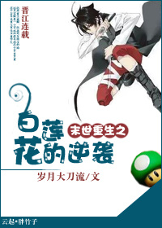

¿Qué? ¿Ha transmigrado a una novela apocalíptica?
¿Qué? ¿Transmigró a un loto blanco?
¿Qué? ¿El loto blanco mató al personaje principal shou e incluso se convirtió con orgullo en amante?
Oh, afortunadamente el loto blanco del apocalipsis tiene un muslo grueso al que agarrarse.
¿Qué? ¿Esta fue en realidad una historia apocalíptica de venganza y renacimiento?
¿Qué? ¿El muslo grueso era en realidad una gran carne de cañón?
Por lo tanto, esta es la dramática historia de un hombre que se transformó en un loto blanco que lucha por sobrevivir en una novela apocalíptica de venganza y renacimiento, tratando de evitar la pata de cerdo reborn (el personaje principal original) y haciendo todo lo posible para alejarse del cañón. gong de forraje.